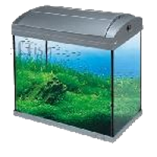
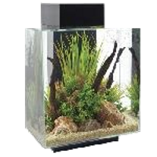
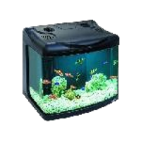
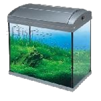
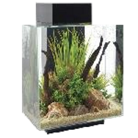
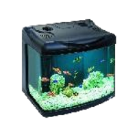
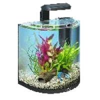
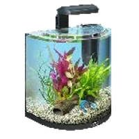

Ознакомившись с нашим обширным каталогом предлагаемой продукции в фотогалерее, вы можете подобрать замечательный аквариум с тумбой. Что еще важнее, вы получите помощь квалифицированных специалистов по выбору всего необходимого. Что произойдет после того, как вы решите купить аквариум? У вас появится замечательное хобби. Это не гольф и не коллекционирование монет, здесь большие затраты не нужны. Начинающие аквариумисты могут купить аквариум недорого в Москве с оборудованием, выбрать рыбок и корм с минимальными вложениями. И каждый день наслаждаться приятным времяпровождением, наблюдая за жизнью игривых аквариумных рыбок. Вы и ваши дети смогут приблизиться к природе. И изучить особенности экосистемы прямо дома. Это очень интересно и познавательно. Согласитесь, это гораздо лучше, чем компьютерные игры, которые отнимают множество времени и портят зрение.
Может, это прозвучит не совсем обычно, но аквариум начинается с тумбы – точно так же, как, по известному выражению, театр начинается с вешалки. И было бы крайне рискованно пренебрегать тумбой, поставив стеклянный дом для рыбок, например, на письменный стол или на какой-нибудь старинный комод. Последствия подобных «экспериментов» чреваты крупными неприятностями – потопом квартирного масштаба, осколками аквариумного стекла, разлетевшегося по комнате. Стандартная комнатная мебель не предназначена для серьезных нагрузок, и помните, что аквариум даже средней емкости (150-200 л) с водой, а также укомплектованный оборудованием имеет внушительную массу – несколько сотен килограмм. А наиболее рациональное решение – сразу купить аквариум с тумбой, избавив себя от лишних хлопот.
Между тумбой под аквариум и привычной тумбочкой, как говорится, две большие разницы. И дело тут не только и не столько в длине, ширине или высоте. Основа под водным царством должна быть основательной. Поэтому для изготовления аквариумных тумб применяются материалы, прочность которых не вызывает сомнений. К таковым относятся фанера, обладающая влагостойкостью, плиты ДСП, МДФ с водоотталкивающими свойствами благодаря ламинированному покрытию.
Особого внимания заслуживает столешница. Ровность ее поверхности доводится до совершенства, а конструкция нижних опор продумана до мелочей – с тем, чтобы нагрузка распределялась равномерно. Тестовые испытания подтверждают: даже минимальный прогиб столешницы зачастую приводит к тому, что дно аквариума треснет. Что будет дальше, продолжать не надо, но из этого вытекает следующее: вопреки заманчивым (и якобы экономным) предложениям изготовить тумбу под аквариум своими руками, лучше все-таки не заниматься самодеятельностью. Приобретая этот особый предмет мебели от проверенных производителей, себе вы обеспечиваете душевное равновесие, а вашим любимым рыбкам – безмятежное плавание.
Эта истина является прописной: тумба и аквариум подбираются таким образом, чтобы они идеально совпадали друг с другом. Когда на массивной тумбе виднеется миниатюрный аквариум, то это полная безвкусица. И, напротив, если габариты искусственного водоема выступают за края тумбы, то подобные «вольности» совершенно недопустимы. Все должно оставаться в разумных пределах. Более того, при установке стеклянной емкости на подходящую тумбу рекомендуется между ними применить подложку – к примеру, тонкий пенопласт. Так надежнее.
Основная аквариумная мебель, помимо прочности, отличительна еще и своей функциональностью. Здесь все предусмотрено для комфортного использования: отверстия для соответствующих кабелей и шлангов, вместительные шкафчики и удобные полки, где хранятся необходимые принадлежности и которые всегда находятся под рукой.
Аквариумные «подножия» многогранны в буквальном смысле этого слова. У вас есть возможность выбрать тумбу под аквариум в прямоугольном стиле «классик», полукруглую, овальную, угловую – все зависит от ваших предпочтений. Эстетичный вид, изящество линий создают завершенную картину и позволят этой мебели стать неотъемлемой частью любого интерьера. А высота каждой из тумб продумана с таким расчетом, чтобы зрители получили наилучшую обзорность и наслаждались яркими красками водного мира. На главную


 







 
